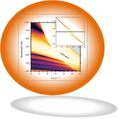
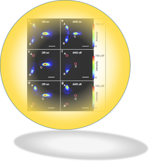
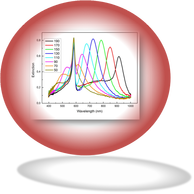

Polariton Fluid Dynamics

By utilizing the polariton fluid properties we study what are the physical laws behind the physics of these bosons gases.
Organic Polariton

The use of organic materials let us study the interaction between light and matter also at room temperature.
Polariton Devices

By applying the laws of the polariton dynamics we designed and realized the first example of cascading capable polariton transistor
Plasmon Polariton

Plasmons are extremely sensitive to the geometry of the metallic nanostructures and allow the study of the interaction of polaritons and geometric structures.